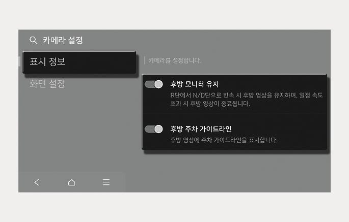

후방 모니터 설정
카메라 설정

2C_RVMCameraSettings
후방 모니터 작동 중에 화면의 설정 (
표시 정보
후방 모니터 유지, 후방 주차 가이드라인을 설정할 수 있습니다.
-
후방 모니터 유지가 선택되어 있는 경우, 'R'(후진)에서 'N'(중립)/'D'(주행)로 변속해도 후방 영상을 유지합니다.
-
후방 주차 가이드라인이 선택되어 있는 경우, 후방 모니터 영상 내 후방 뷰 주차 가이드라인과 후방 탑 뷰 가이드라인이 표시됩니다.
-
차량 사양에 따라 화면 설정 메뉴가 없을 수도 있습니다.
-
후방 뷰 주차 가이드라인의 가로 선은 화물 미적재 상태를 기준으로 차량으로부터 0.5 m, 1 m, 2.3 m 거리를 나타냅니다.
-
후방 탑 뷰 주차 가이드라인의 가로 눈금은 화물 미적재 상태를 기준으로 테일게이트 열림 거리, 차량으로부터 1.5 m 거리를 나타냅니다.
-
후방 모니터는 다음의 경고 방식을 설정할 수 있습니다.
-
주차 안전 우선
자세한 내용은 7장 '운전자 보조 기능 설정'을 참고하십시오.
-